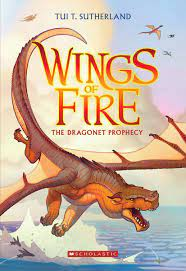
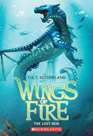
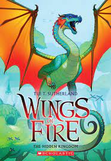
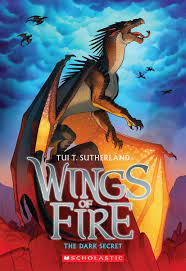

Clay has lived his whole life under the mountain. The MudWing dragonets
knows that a war is raging between he dragon tribes in the world outside a war that
he and four other dragonets are destined to end, according to the mysterious
Prophecy they've been taught. The five "chosen" eggs - hidden away for years -
all to fulfill the Prophecy
But not every dragoet wants a destiny. And when danger threatens
one of their own, Clay and his friends may choses freedom orver fate...
leave the mountain... and set the dragon world on a course that no one
could have predicted

Book 2
The Lost Heir
The lost heir to the SeaWing throne is going home at last ....
She can't beleive it's finally happening. Tsunami and her fellow dragonetets
of destiny are journeying under the water to the great SeaWing Kingdom. Stolen
as an egg from the royal hatchery, Tsunami is eager to meet her future subjects and
reunite with her mother, Queen Coral.
But Tsunami's return to the home she never knew doesn't go quite as
the way she imagined. Queen Coral welcomes her with open wings, but a mysterious
assassin has been killing off the queen's heirs for years, and Tsunami may be the next
target. The dragonets came to the SeaWings for protection, but this oceon hides
secrets, betrayl - and perhaps even death.

Book 3
The Hidden Kingdom
Deep in the rain forest, danger awaits ....
The dragonets of destiny aren't sure what to expect in the RainWing
kingdom - Glory hopes to learn more about her family, and since the RainWings
aren't fighting in the war, all five of dragonets think they might
be able to hide safely for a while
But something deadly is stalking the peaceful kigndom, and the dragonets
soon discover that RainWings have been mysteriously disappearing from
forest. When the RainWing queen won't do anything to find her missing
tribe members, Glory and her friends set off on their own rescue mission
- which leads them right back into enemy territory....

Book 4
The Dark Secret
In the shadows, trouble is breathing ....
The mysterious NightWings keep everything hidden, from their home
and their queen to their allegiance in the war. Now they've kidnapped
their very own dragonet of destiny, and Starflight is finally meeting
the rest of his tribe - whether he wants to or not.
The NightWings have also kidnapped several innocent RainWings
now in the dark, barren, miserable place that is the NightWing kigndom.
Starflight wants to help the RainWings, but he's busy saving his own scales
and trying to find a way back to his friends. The fate of two kingdoms
rests in his talons, and with no one to save him, Starflight will
have to find a way to be brave... before it's to late.

Book 5
The Brightest Night
One will have the power of Wings of Fire ....
Sunny has always taken the Dragonet Prophecy very seriously. If
Pyrrhia's dragons need her, Clay, Tsunami, Glory, and Starflight to end the war,
she's ready to try. She has some good ideas on how to do it, if anyone
would listen to her.
But shattering news from Morrowseer has shaken Sunny's faith
in their destiny. Is it possible form anhone to end this
terrible war and choose a new SandWing queen? What if everything
they've been through was for nothing?
Buried secrets, deadly surprisses, and an unexpected side to scavengers are all
waiting for her in the shifting sands of the desert, where Sunny
must decide once and for all: Is her destiny already writted?
Or can five dragonets change the fate and save the world... the away
they chose